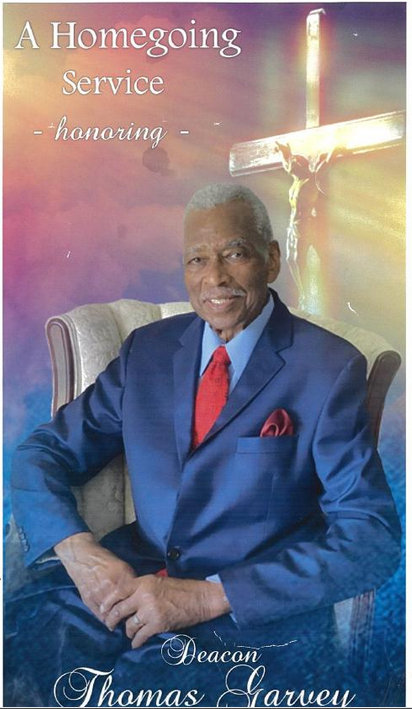
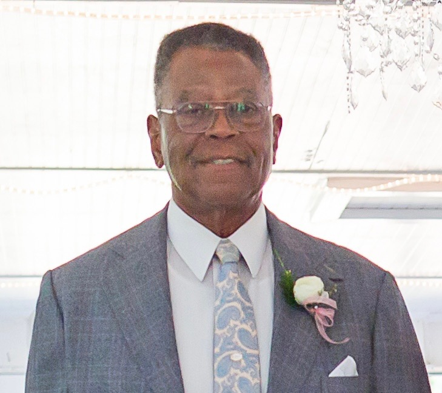
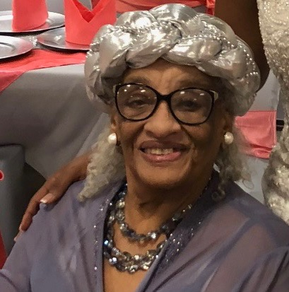
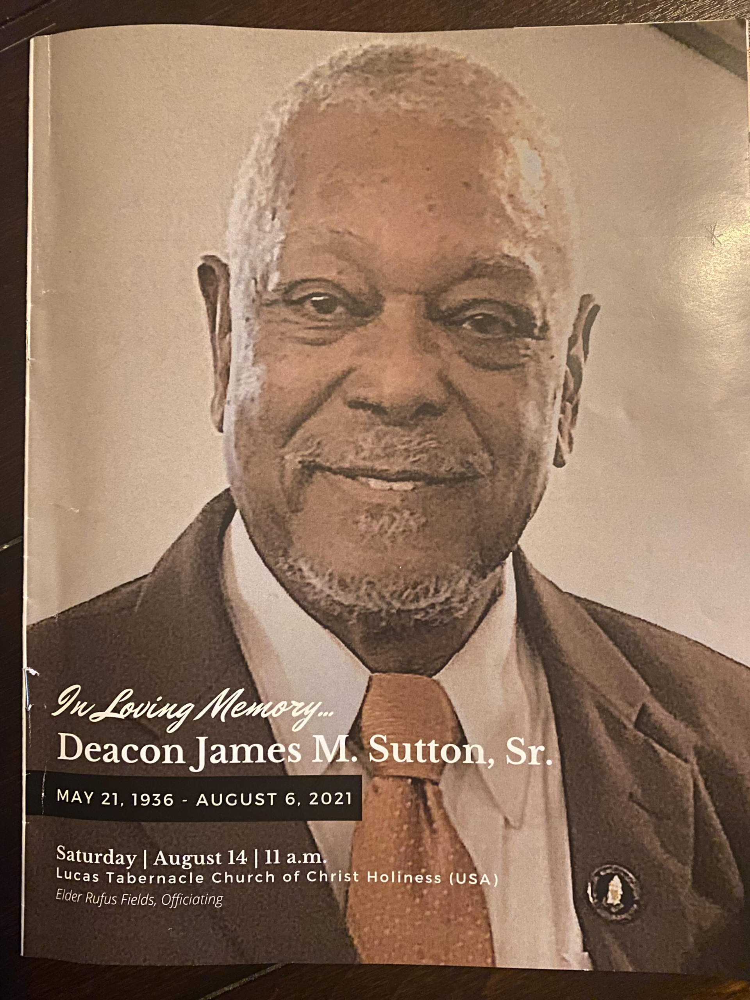
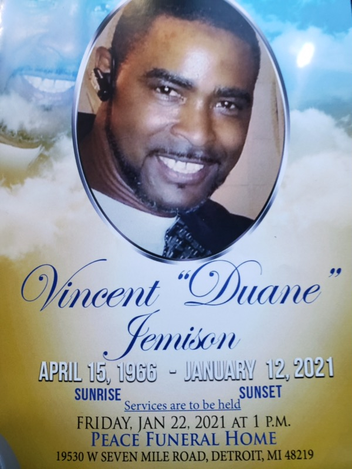
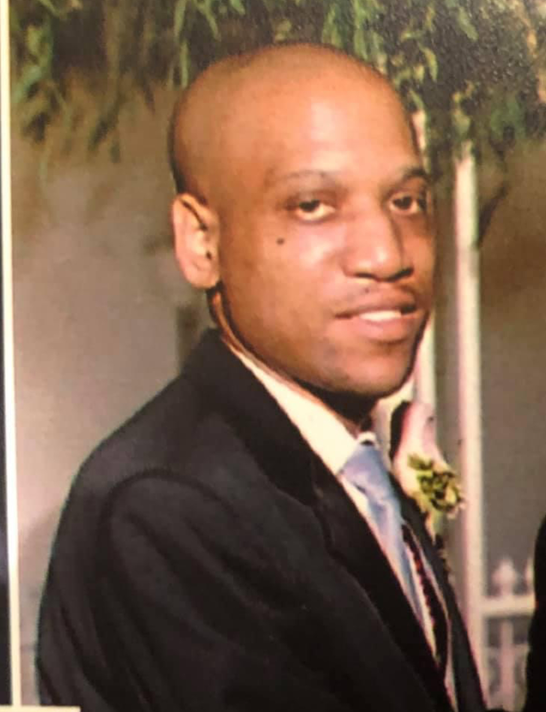
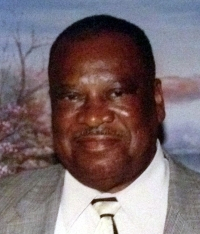
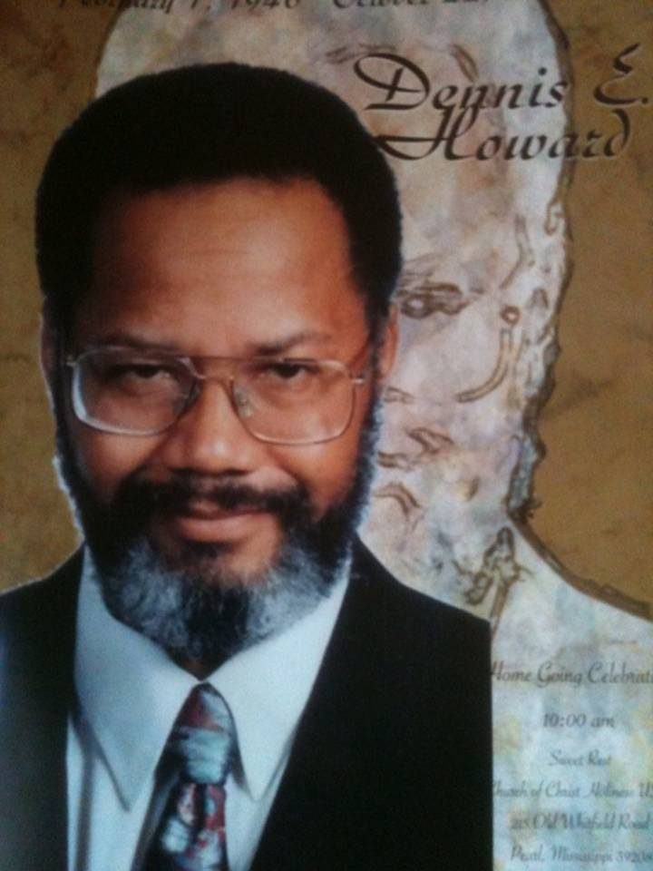
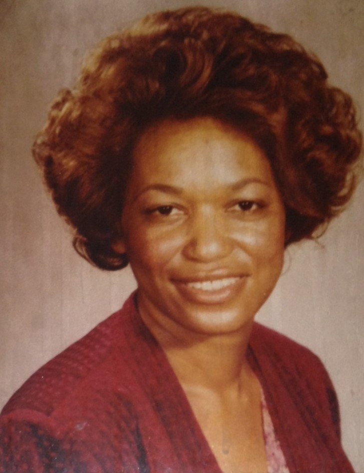

Memorials

Deacon Thomas G Sutton
August 16.1930 - November 4, 2023
At a very early age he accepted Christ as his personal Savior and served in various roles of the church throughout his life. His favorite church activities were Sunday School, and the Brotherhood. While living in Michigan him and his wife and several others launched St. Paul Church of Christ Holiness (USA). For 8 years, he served as National President of the Brotherhood by writing new by-laws and it grew to a membership nationally.
For 71 years Thomas was married to Mary Etta Myles-Sutton parents of 5 children (2 passed shortly after birth). Thomas Earl (Carolyn), Nathaniel Keith (Mallory) and Ritchie Kelvin and a host of grand and great grandchildren

Oliver L Sutton
May 4, 1942 - April 15, 2022
He lived his life with a servant's heart, always looking after the comfort and well-being of others. He appreciated the many added rewards of serving God when he was blessed to go on mission trips to Africa.
He loved well and lived well. He had a son, two daughters and seven grandchildren. He was married to the love of his life, Pam, for 43 years

Inez Beatrice Bates Sutton
Dec 1, 1929 - Dec 10, 2021
Inez continuously devoted herself to service and ministry in the church, family, and community. Her commitment to the work that God had given unto her hands continues to be released in her service with the Luca Tabernacle Church of Christ Holiness U.S.A. in the stewardship of deaconess for th above 50 years and church recording secretary for over 40 years.
Inez was united in holy matrimony to the late L.W. Sutton. To this union 6 beautiful blessings were born: Alma Jean Miller, Linda Rose Sutton, Lawrence Eugene Sutton, Cynthia Faye Smith, La'Rue Darnell Sutton and Larry Nugent Sutton and a host of grandchildren

May 21, 1936 - August 6, 2021
James was reared in a Christian home and attended church services consistently with his family at Lucas Tabernacle Church of Christ Holiness U.S.A. (C.O.C.H.U.S.A) He was a member of the Church of Christ Holiness USA his entire life. He was also ordained a decon at Mt. Olive C.O.C.H.U.S.A (now Greater Works) by Elder Arthur Lee Jenkins. He also served on the deacon boards at Lucas Tabernacle C.O.C.H.U.S.A and Cynthia C.O.C.H.U.S.A.
James enjoyed his retirement and spent his time at family gatherings, traveling to see his children and grandchildren and siblings, bowling with his league and playing chess and dominos with worthy opponents. He was a very generous soul. Over the years he supported various organizations and causes includung the Piney Woods School, NAACP, and of course his churches. He loved people and lived a life of opportunity and adventure for 85 years

April 15, 1966 - January 12, 2021
Wayne faced a few hardships in his life but, he didnt let it get him down. He was determined to live his life without fear and was ready for whatever he had to face along the way.

July 27, 1973 - October 8, 2020
Born: Los Angeles, CA
We lost a beloved Brother Xavier L Greene to Damon and Tray, Uncle to Chloe and Dani, Cousin, Nephew and friend, to our family and a Brother-In-Law who was more Brother than In-Law to me. His passion for film production, media ministry for Center of Hope in Los Angeles California, real estate investment, politics and proud Howard University graduate has been impactful on all of our lives. A drum major gone to soon. Hoping you are getting into some #Good Trouble, Necessary Trouble - John Lewis
"Yes if you want to say I was a drum major say that I was a drum major for justice, say that I was a drum major for peace I was a drum major for righteousness and all of the other shallow things will not matter." - Rev. Martin Luther King Jr
Please see the below link to view Xavier's Homegoing Celebration
https://drive.google.com/file/d/13W3ZTaHGsr2CKs-KfG5KhxvyBSUHwwL_/view
Born: Silvercreek, MS
He was the sixth son of eleven (11) children. Deacon Sutton united with Christ Temple Church of Christ Holiness (USA) of Los Angeles, CA in 1957. Later he and his family would become pioneer members of New Testament Church of Christ Holiness (USA).
He joined Air Force and upon completion of active duty went on to earn his Associate in Arts and Electronics Technology from El Camino Community College in Hawthorne, CA.
Photos: Video
Married Queen Ester Bourne
Born: Maud, MS
Served as junior deacon and an usher at the Jefferson Chapel Missionary Baptist Church located in Abbeville, MS.
He graduated from Central High School and joined the US Army. Had a second carrer in management and realty. He was much loved and respected by the 93rd street neighborhood family.
Married Dorthy Sutton
Born: Silvercreek, MS
He was the oldest son of eleven (11) children. Served as Deacon for over sixty (60) years and Sunday School teacher and Adult Choir member of the Lucas Tabernacle Church of Christ Holiness USA located in Prentiss, MS.
Alcorn State University alumni with a Bachelor of Science degree in Agriculture and Vocational Counseling. A Master's degree in Vocational Education from the Tuskegee Institute.
Married Inez B. Bates
Delois Magee
Dec 18, 1925 - Nov 27, 2015
Born: Silvercreek, MS
Second oldest of 11 children. She was a strong believer in Christ and a devoted member of the adult usher board. Retired from the Detroit Public School System and Chrysler Corporation.
Married Willie Magee (Deceased - Unkn)
Willie Magee Jr.
May2, 1945 - Mar 18, 2015
Born: Silvercreek, Mississippi
US Army Vietnam Veteran. Ford Motor Company retiree and a faithful Mason Lodge brother.
Alan Timothy Hardy Jr.
Nov 27, 1990 - Jan 27,2015
Born: Detroit, Michigan
Beloved son of Alan and Karen Hardy, brother and friend. He received a basketball scholarship to Palm Beach Atlantic University and was recognized as the Most Valuable Player during his senior year. He graduated with a BS in Business Management in 2014.
Benjamin Hardy
Jan 29, 1922 - Jan 23, 2015
Born: Silvercreek, Mississippi
Former Military Policeman and Black activist during the Civil Rights Movement with Dr. Martin Luther King
Married Era Bickerstaff (Deceased 2002)
Married Francis Johnson (Deceased 2005)

Rev. Emory Greene Jr.
Jul 8, 1936 - Aug 21. 2014
Born: Learned, Mississippi
Pastor and founder of Christ Centered Community Chourch in Los Angeles, California
Married Alice Pearl Sutton

Dennis E. Howard
Feb 1, 1946 - Oct 22, 2011
Born: West Virginia
Served as the Pasadena Youth Christian Center Board President and worked closely with the NAACP
Married Margaret Mavis Sutton-Moore
Mitrice L. Richardson
Apr 30, 1985 - Sep 17, 2009
Born: Lynwood, California
Beloved daughter of Larry & Latice Sutton, sister, and friend, Graduated from CSUF with honors with a degree in Psychology.
Wade E. Sutton
May 5, 1932 - Jul 30, 1999
Born: Silver Creek, Mississippi
Served as the National President of Deacon Relief
Married Carrie Mae Williams
Alma E. Sutton - Duffy
Oct 9, 1923 - May 29, 1998
Born: Silver Creek, Mississippi
Served as Head Circulation Librarian
Married Elder Bill W. Duffy

Alice P. Greene
Sep 15, 1940 - May 24, 1987
Born: Silver Creek, Mississippi
Head Counslor for the California Unified School District Marina Del Rey
Married Rev. Emory Greene Jr.